Hydroponics Floating Plate
Overview
1.1 Standardisation of Hydroponics for Labs
Labs that grow Arabidopsis in liquid medium tend to improvise the setup: a piece of foam cut to size, a mesh taped over a container, or a fixed plate sitting above a reservoir. None of it is repeatable between labs, or even between runs in the same lab.
Our plate floats on the medium, so the seedlings stay at the same depth no matter how much liquid is left. The whole thing is three print files on a standard FDM printer, so another lab can run the same geometry we did. Same depth, same spacing, same conditions, whoever is running it.
1.2 The Problem With Fixed Plates
Our first version was a fixed plate sitting over a liquid chamber. The plate held the seedlings at a set height and the medium sat underneath, so the level had to be set by hand before every run.
The level has to sit just under the growing platform, and as high as possible. Too low and the roots lose contact; too high and the platform floods. The window between those two failures is narrow.
Nor does the level stay where it is set. The plants drink and the medium evaporates, so a level that was right at the start of a run is wrong by the end of it. Someone has to watch the reservoir and top it up, and every top-up is a chance for conditions to drift between replicates. That is what we set out to remove.
Engineering Cycles
The setup reached its final form in three design–build–test–learn cycles: first the container, then the box we kept, then the printed plate the seedlings sit in. How the plate floats is in 4.3; the plate as it is now, with its specifications and dimensions, is in part 4.
DBTL cycle 1 of 3
2.1 DBTL Cycle 1 – Finding the Container
Three boxes, three failures, one list of requirements
Design
We started from the hydroponic method of Conn et al. (2013)1: seedlings in agar‑filled holders, their roots hanging in ½ MS medium, the tank kept dark against algae, and the medium replaced every 2–3 days. The first container followed it closely: a large opaque tank, with a board on top holding the seed holders, black microcentrifuge‑tube lids filled with agar.
Build
We built three containers in turn, each answering the last one’s failure.
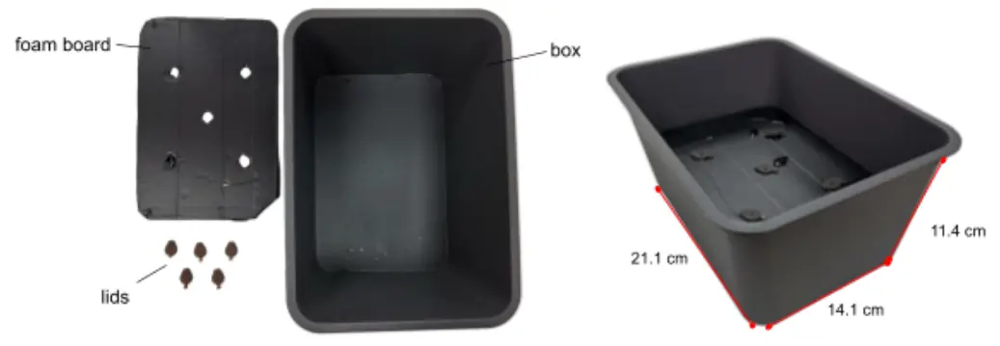
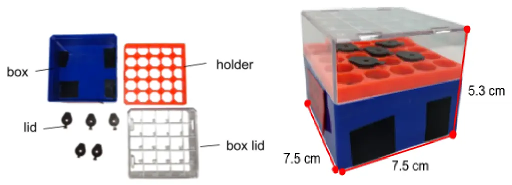
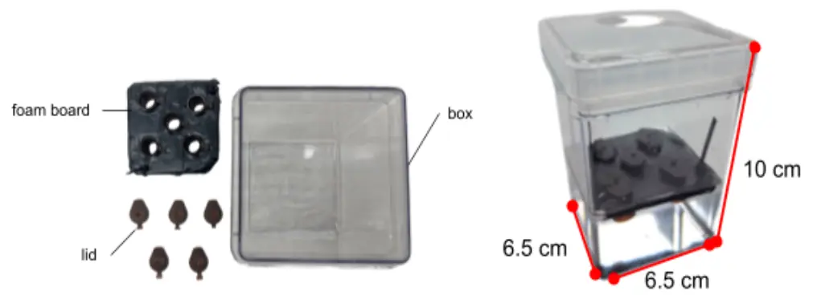
Test
Each box grew seedlings, and each failed in its own way. The black tank was far too big for five seedlings, its foam board was fragile and slow to make, and because it was deep and black we could see neither the roots nor whether the medium had turned cloudy. The small box leaked at its joint and through its bottom whenever it was carried, and black tape over the bottom did not stop it; its lid also fell into the box unless it was set down at one particular angle. The tall clear box held the medium and showed the roots, but its board fitted so tightly that changing the medium was awkward, and it was too narrow for more than a few plants.
Learn
Together they set what the container has to be: clear, to watch the roots and the medium; deep enough for the roots; one watertight piece, to carry to the bench every 2–3 days; wide enough for 5–13 seedlings; and with a board that lifts out.
DBTL cycle 2 of 3
2.2 DBTL Cycle 2 – The Pipette‑Tip Box
A lab box we already had: clear, deep, autoclavable
Design
A 1000 µL pipette‑tip box meets every requirement from the first cycle. It is clear, deep and one piece, wide enough for up to 13 seedlings without taking much bench space, and made to be cleaned and autoclaved, so it can be reused run after run.
Build
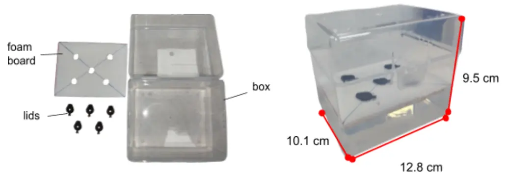
Test
The roots and the medium could be watched through the clear walls, and the box was contaminated less often than the containers tested before it. It could be reused multiple times after cleaning and autoclaving, and one board took 5 to 13 holes.
Learn
The tip box is the container from here on. The board became the weak part: the foam softened after days in the medium and broke while the medium was being changed, and every hand‑cut board came out a little different. The board had to be printed.
DBTL cycle 3 of 3
2.3 DBTL Cycle 3 – The Floating Plate
Printed, and floating on its own sealed air
Design
A printed board keeps its shape in the medium, and every one comes out the same. Our first printed plate sat at a fixed height over the medium, and that showed the next problem: the level has to stay in a narrow window just under the plate, and it drifts as the plants drink and the water evaporates (1.2). So the plate floats instead. Sealed air chambers in its own frame carry it on the medium, and the roots stay at one depth however much liquid is left (4.3).
Build
The first floating version was printed on 25 June, with a pole at each corner carrying washers, so the freeboard could be trimmed after printing instead of reprinting the whole part. The plate now is smaller, 117.5 × 92.5 mm, so it fits the tip box, with 13 seed bores in rows of four, five and four and a clip‑in handle at each end. It prints in PLA: the plate and seed holders with no supports, the handles with 0.86 g of support (4.1).
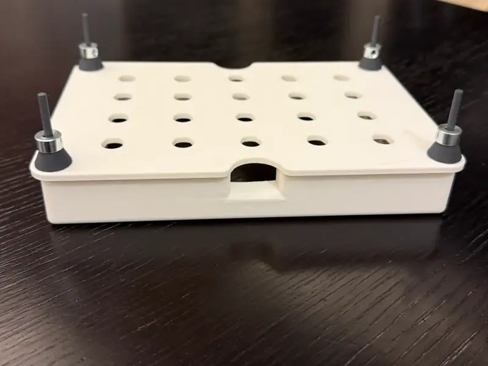
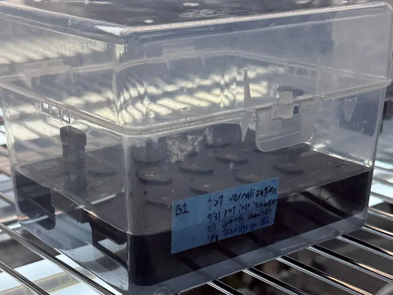
The tip box is clear so the roots can be watched, but the method keeps the medium dark against algae. So the tip box stands in a black box, 14.7 × 11.5 × 6.2 cm, that covers its lower half, and the tip box’s front clasp sits in a notch in one side. The tip box still lifts straight out to look at the roots.
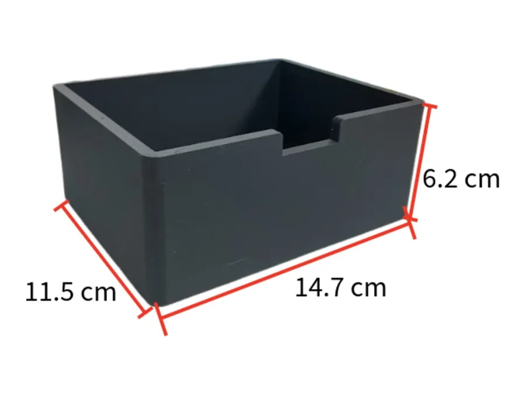
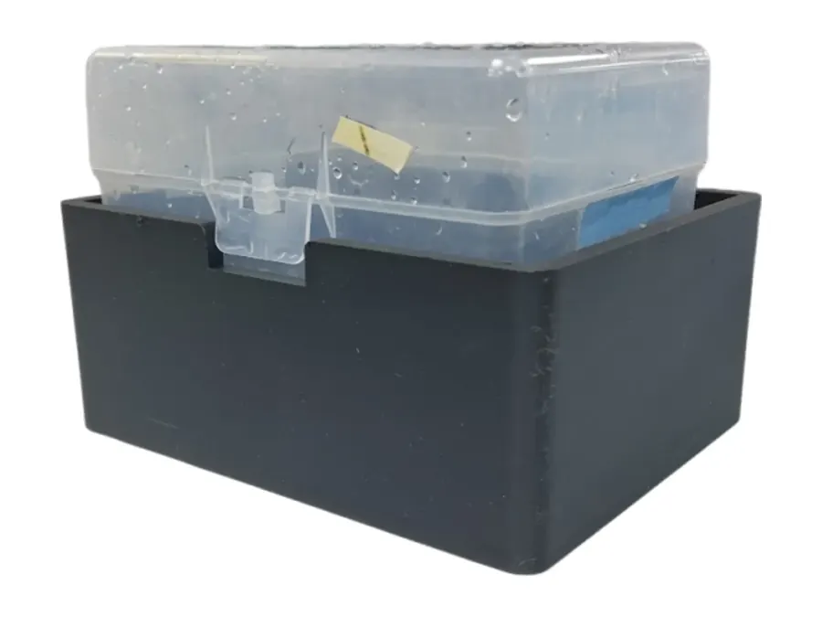
Test
The plate carried the plant team’s salinity pre‑test: four boxes side by side, one plate in each, for a control and for pre‑, co‑ and post‑treatment with CH Bio peptide (a commercial peptide from CH Biotech that helps plants resist abiotic stress) at 1:500, all under 100 mM NaCl for 7 days. The boxes were photographed from above on 25 July, 28 July and 4 August. By the last date the co‑treatment box had the largest and greenest rosettes and the post‑treatment box the palest, and the co‑treatment plants also had the highest fresh weight and chlorophyll content. The pre‑test ran before the plate’s CAD was revised on 11 August (User Testing), so it used the earlier version of the plate.
In use, the plant team found that the handles make changing the medium easier.
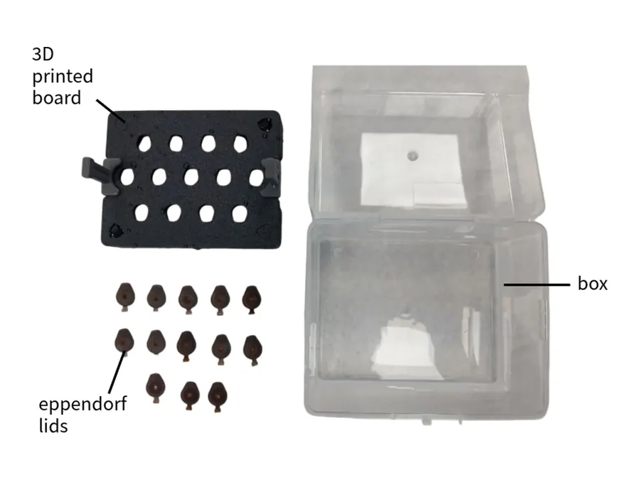
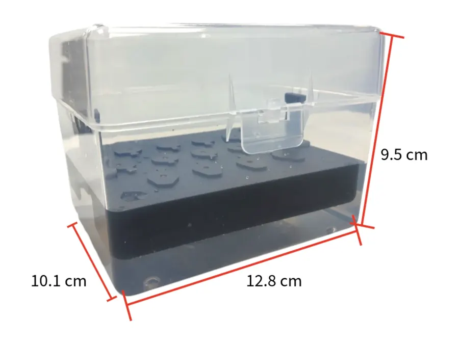
Learn
The corner poles were the safety margin on the buoyancy. We ran the displacement calculation again every time the design changed (4.3), and the volume was tuned closely enough that the poles came off.
2.4 User Testing and Feedback
The setup’s users are the plant team, who grow Arabidopsis in it for the protectant tests. Two outside visits: one changed the plate, the other changed the plant protocol.
Yes Health iFarm 11 August indoor vertical hydroponic farmFewer transplants, circulating medium; the plate’s CAD was revised there the same day
AdvisedWe saw stacked commercial racks beside our own box. The farm’s advice: keep plant transfers to a minimum, because transplanting itself stresses the plant, and keep the medium circulating and gently aerated.
ChangedThe plate’s CAD was revised at the farm the same day; the plate now holds thirteen seedlings (cycle 3). Circulation and aeration are not part of the box.
Prof. Cheng Mei‑Chun 28 August second visitReviewed two boxes and their contamination; the plant protocol was standardised
ReviewedTwo of our hydroponic boxes, and the contamination we were seeing in them.
ChangedThe plant team standardised plant age, treatment timing and sample conditions. The box and the plate were not changed.
The plant team judged the setup on handling, not on buoyancy: a board that survives a medium change, handles to lift it out by, and room for more seedlings in one box.
Results
The plant team ran its CH Bio peptide pre‑tests in our hydroponic boxes: 13‑day‑old Arabidopsis under 100 mM NaCl for 7 days, and 12‑day‑old plants at 37 °C for 7 days, with the peptide given before, with or after the stress. The salt run set the stress for later experiments: 100 mM NaCl stresses the plants significantly without killing them. After several failed plantings in the boxes, the later protectant runs moved to tube racks, where Arabidopsis grew better.
Team wiki · Plants · Results · Hydroponics CH Bio peptide pre‑tests in the hydroponic boxes Read the plant team’s hydroponic resultsFinal Design & Specifications
Three cycles ended on this setup: a 1000 µL pipette‑tip box, the printed plate floating on the medium inside it, and a black box over its lower half to keep the medium dark. The plate falls with the level, so its thirteen seedlings stay at one depth through a run, and it lifts out by its handles when the medium is changed.
4.1 Specifications
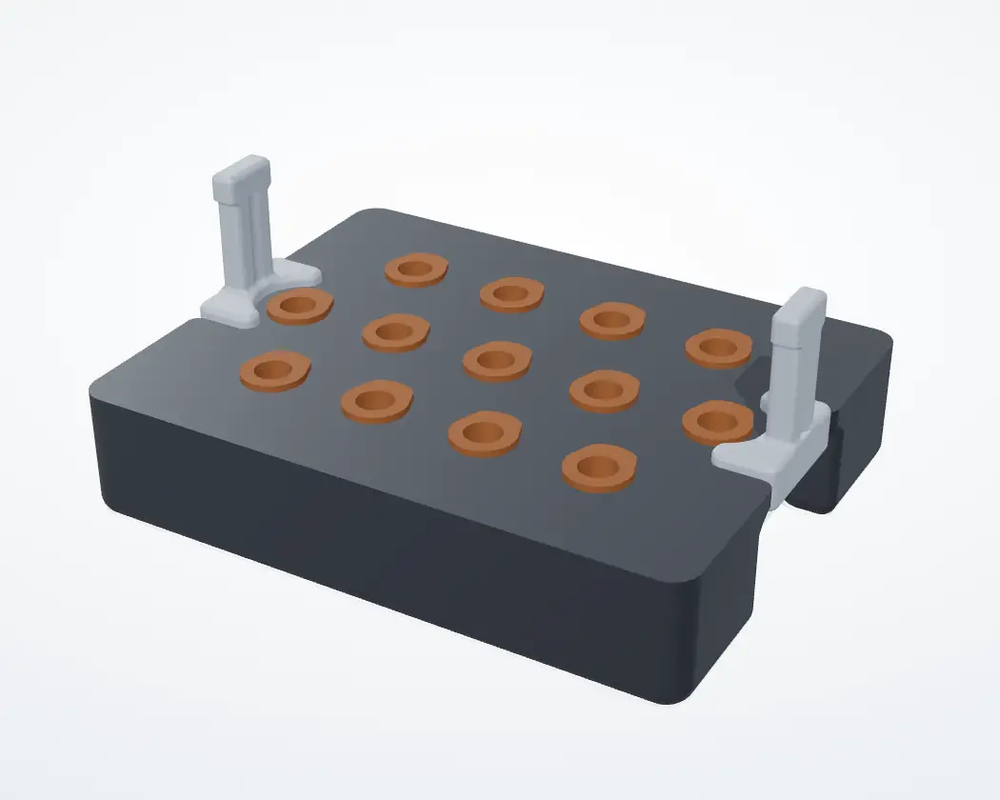
- Seedlings
- 13, in rows of 4, 5 and 4, 21.59 mm apart along a row
- Plate
- 117.5 × 92.5 mm; 25.1 mm from the slab top to the bottom of the pontoons
- Flotation
- Two sealed air chambers inside the pontoons, 42.27 cm³ between them; no foam and nothing strapped on
- Freeboard
- About 4.8 mm predicted at the assembled 71.3 g, before seedlings; lower as seedlings and water add mass (). Not yet measured on a print
- Container
- A 1000 µL pipette‑tip box, 12.8 × 10.1 × 9.5 cm: clear, and reused after cleaning and autoclaving
- Light block
- A black box, 14.7 × 11.5 × 6.2 cm with a notch in one side, covering the lower half of the tip box
- Handles
- Two, clipped into a trapezoid slot at each end; the grips stand 26.51 mm above the slab
- Printed parts
- 16 pieces from 3 print files, in PLA, with no adhesives and no fasteners; only the handles need support, 0.86 g of it (5.1)
- Mass
- 71.3 g assembled, without seedlings: plate and handles 61.3 g, seed holders 10 g
The parts, numberedas in the model and the STL downloads
Printed parts 1–3
- 1Floating plateThe slab, both pontoons and their sealed air chambers, printed as one piece.
- 2Handle ×2One clips into a slot at each end, so the plate lifts out without touching a plant.
- 3Seed holder ×13Seats on its flange in a bore and carries the seed and its medium; the roots pass through into the reservoir.
4.2 Design Decisions
- The frame is the flotation. The air that floats the plate is sealed inside its own pontoons, not in a foam block or a float strapped underneath. The slab, both pontoons and their chambers print as one piece.
- A teardrop cross‑section. Each pontoon is a box section with its lower sides chamfered to a point, a pentagon, so it prints without support.
- Clip‑in handles. The plate lifts out of the box by its handles, without anyone touching a seedling.
- No adhesives, no fasteners. The handles clip in and the seed holders drop in, so there is nothing to come unglued in the medium.
- Printed, not cut. Every plate comes out the same and keeps its shape in the medium, where the foam boards softened and broke (cycle 2).
- A clear box in a dark one. The tip box shows the roots and the medium; the black box over its lower half keeps light off the medium against algae, and the tip box still lifts out to look at the roots.
4.3 Buoyancy Design
The plate floats on a sealed air volume built into its own frame. There is no foam block and nothing strapped underneath. The pontoon sections are hollow, sealed chambers with a teardrop cross-section. The plate prints at 15% gyroid infill rather than solid, which keeps it light while leaving enough internal structure to hold its shape.
Each pontoon encloses one sealed chamber, a teardrop‑like pentagon in cross‑section (); the two chambers hold 42.27 cm³ of air between them.
Sizing them is a displacement problem. The plate has to displace its own mass plus the seedlings plus whatever water the printed part takes on, and it has to do that while sitting at the freeboard that puts the roots in the medium and the crowns above it. We ran this calculation again every time the design changed, because any change to wall thickness or footprint moves the mass and the displacement at the same time.
- MassThe plate's own mass, plus the seedlings, plus whatever water the printed part takes on.
- BuoyancyThe medium the pontoons displace below the waterline (hatched).
- FreeboardWhere the two balance: the roots in the medium and the crowns above it.
The displacement at each waterline gives the plate’s load line (). In water at 1.00 g/cm³ every cubic centimetre displaced floats a gram, so weigh the assembled plate with its seedlings, find that mass along the bottom, and read the freeboard up the side; lists seven of its points. Down the straight sides of the pontoons the hull gains 3.51 cm³ per millimetre of draft, so every 3.5 g added sinks it about 1 mm.
- The waterline drawn in : 54.2 g floats with 9.2 mm of freeboard.
- The assembled plate: 71.3 g from the slicer, before seedlings, floats with a predicted 4.8 mm of freeboard, 1.6 mm (8.1 g) above point 3. Seedlings, the medium in the seed holders and any water the print takes on bring it closer.
- The slab’s underside meets the water at 79.4 g and 3.2 mm. From here the whole slab displaces, so each gram sinks it less.
- The slab top is awash at 111.9 g.
- Solid PLA: printed solid, the sixteen parts would weigh 92.6 g at most, and float with 1.9 mm of freeboard.
Displacement at each waterline7 waterlines
| Freeboard | Draft | Plate alone | Assembled |
|---|---|---|---|
| 18.2 mm | 6.9 mm | 22.4 cm³ | 22.4 cm³ |
| 15.2 mm | 9.9 mm | 32.9 cm³ | 32.9 cm³ |
| 12.2 mm | 12.9 mm | 43.4 cm³ | 43.4 cm³ |
| 9.2 mm, as drawn | 15.9 mm | 54.0 cm³ | 54.2 cm³ |
| 6.2 mm | 18.9 mm | 64.5 cm³ | 65.5 cm³ |
| 3.2 mm, slab underside at the water | 21.9 mm | 75.9 cm³ | 79.4 cm³ |
| 0, slab top at the water | 25.1 mm | 105.9 cm³ | 111.9 cm³ |
Freeboard is the slab top above the water; draft, the pontoon bottoms below it. Displacement is the volume of the printed shell below the waterline, sealed air included, computed from the STLs. Assembled adds the parts of the two handles and the thirteen seed holders that sit under the water.
4.4 Dimensions
- Sealed air chamber, hidden below the slab
- Pontoon, hidden below the slab
- Clip-in handle
- Sealed air, in section
- Printed plate, in section
- Seed holder
More dimensionsbores, pontoons, chambers, handles
| Feature | Dimension |
|---|---|
| Seed positions | 13 bores in rows of 4, 5 and 4; 21.59 mm apart along a row, rows 22.86 mm apart, the outer rows half a pitch off the middle one |
| Bores | Teardrop-shaped: a ∅10.39 mm circle drawn out to a point, 11.69 mm long. Each seed holder's flange is the same shape |
| Pontoons | One along each long side, 10.16 mm wide and reaching 21.91 mm below the slab, with 3.81 mm corner radii; each hooks inward at both ends and stops short of the handle pocket |
| Sealed chambers | One inside each pontoon, 114.33 mm long; 21.13 cm³ each, 42.27 cm³ the pair |
| Handles | The foot wraps the end of the slab and locates in its trapezoid slot; the grip stands 26.51 mm above the slab |
Reproduction
5.1 Design Files
The plate’s three printed parts, numbered as in its 3D model (4.1). Each STL downloads under a descriptive name, in millimetres.
The three STLsone per printed part
- 1Floating plate
The slab, both pontoons and their sealed air chambers, printed as one piece.
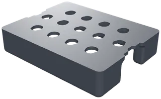
- 2Handle
Clips into a slot at one end, so the plate lifts out without touching a plant. Print two, one for each end.
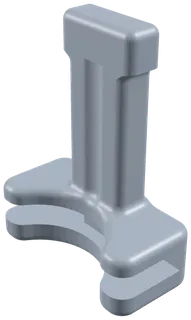
- 3Seed holder
Seats on its flange in a bore and carries the seed and its medium. Print thirteen, one for each bore.
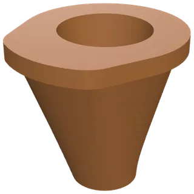
References
- Conn SJ, Hocking B, Dayod M, et al. Protocol: optimising hydroponic growth systems for nutritional and physiological analysis of Arabidopsis thaliana and other plants. Plant Methods 9, 4 (2013). doi:10.1186/1746-4811-9-4